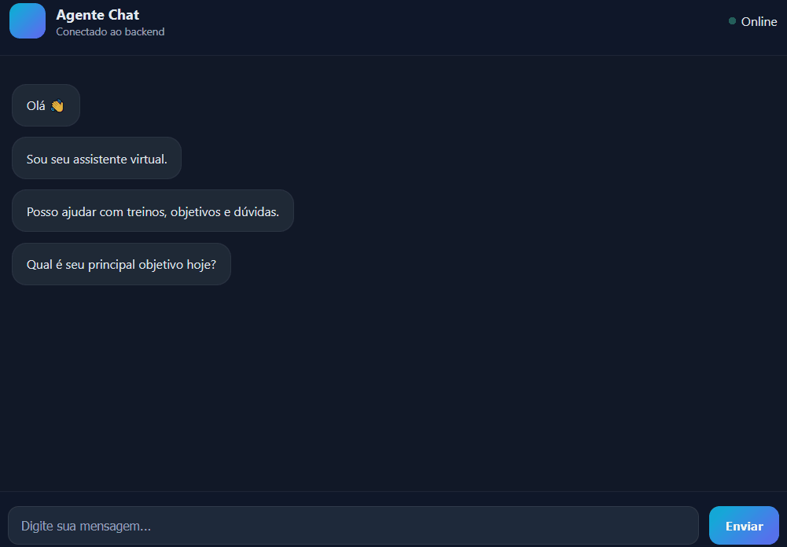

Documentação técnica do projeto de portfólio com Node.js, n8n e Supabase.
Fluxo real da interface de chat na aplicação atualmente publicada.

O AI Agent é um projeto de portfólio com agente de IA geral e interface de chat. A aplicação envia prompts para um fluxo n8n via webhook e devolve a resposta em uma UX simples e direta. Interações e metadados podem ser persistidos no Supabase para observabilidade.
UI (public/) -> POST /api/agent -> middleware rate-limit -> controller -> service -> webhook n8n
\-> saveInteractionLog -> Supabase
UI (public/) -> GET /api/agent/metrics -> controller -> agregação Supabase (fallback: runtime)
/api/agentEnvia uma mensagem para o assistente.
{
"message": "Explique este timeout"
}
text/plain: resposta do agente (inclui fallback quando o n8n está indisponível)application/json: entrada inválidaapplication/json: erro interno não previsto/health{ "ok": true }
/api/agent/metricsRetorna métricas do dashboard via Supabase (ou fallback em memória quando indisponível).
{
"ok": true,
"totalExecutions": 12842,
"criticalErrors": 12,
"avgResponseTimeMs": 248,
"durationSampleSize": 500,
"source": "supabase"
}
PORT=3000 N8N_WEBHOOK_URL=https://your-n8n-instance/webhook/agent SUPABASE_URL=https://.supabase.co SUPABASE_SERVICE_ROLE_KEY= SUPABASE_TABLE=agent_messages # Política de retry para 429 do n8n N8N_RETRY_MAX=2 N8N_RETRY_BASE_DELAY_MS=800 # Rate limit da API (por IP) RATE_LIMIT_WINDOW_MS=60000 RATE_LIMIT_MAX_REQUESTS=20 RATE_LIMIT_BLOCK_MS=30000 # Janela de amostragem de métricas METRICS_SAMPLE_LIMIT=500
npm install.env a partir de .env.examplenpm run devhttp://localhost:3000create table if not exists public.agent_messages ( id bigserial primary key, created_at timestamptz not null default now(), message text, response_body jsonb, ok boolean not null default false, error_message text );
Retry-After.N8N_RETRY_MAX e N8N_RETRY_BASE_DELAY_MS.N8N_WEBHOOK_URL e execução do webhook no n8n.SUPABASE_URL e service key).npm start e Node >= 18.v1.3.1: ajuste final de UI/docs com header integrado, About revisado, demo na documentação e consistência de versão entre app e docs.v1.3.0: dashboard integrado a métricas reais via /api/agent/metrics.v1.2.1: retry com backoff para 429 do n8n + rate limit por IP na API.v1.2.0: documentação e interface reorganizadas em Chat, Changelog e About Project.v1.1.0: persistência de interações migrada para Supabase Postgres.